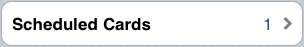

Vocabulator - Help
New to
Vocabulator?
If you are new to Vocabulator and want to get an idea of how it
works, read on. In this help file, we give you a tour of the system
to show you how it can be used to look up the definitions of words
and maintain and improve your vocabulary.
Table of Contents
- Setup
- The Basic Idea
- Vocabulator's Four Tabs
- The Search Tab
-
- Searching
- Viewing Definitions
- Shortcuts
- Backwards and
Forwards Navigation
- The Star Button
- The Review Tab
-
- The Review Home Screen
- Review Exercises
- Flashcard Quizzes
- Study Statistics
- Summary
- Other Tabs
-
- The History Tab
- The More Tab
- About
- Managing your Cards
- Settings
- Copyright Notice
When you first load Vocabulator, you'll go through a quick setup
process. If you are able to view this help page, then you've
already successfully installed Vocabulator and downloaded the
database file. So we can skip over that part here. Let's start by
describing the basic idea behind Vocabulator.
The Basic
Idea top
"A new word is like a fresh seed sown on the ground of the
discussion."
- Wittgenstein (Culture and Value, 1980)
Words are the building blocks of language, and one's vocabulary
is an important resource for communication and self-expression. The
program you've downloaded, called Vocabulator, aims to help you
expand your vocabulary, in an easy and efficient way.
To help you expand your vocabulary, Vocabulator makes use of two
components: a Dictionary, and Flashcard Quizzes. The dictionary
allows you to look up the definitions of new words you come across
conveniently. The flashcard quizzes give you an effective way to
practice the words you look up.
Studying with Vocabulator works in three steps. When you
encounter a word you don't know, you
- Look up the word in the dictionary,
- Browse the dictionary page and tell Vocabulator which
definition(s) you want help with remembering, and
- Do flashcard quizzes prepared by Vocabulator to remember the
words you look up.
The rest of this help file describes each of the three steps
above in more detail.
Vocabulator's
Four Tabs top
In Vocabulator, there are four main tabs with which you should
become familiar. A picture of the tabs appears below.

Each tab gives you access to different features:
- The Search Tab: This is
where you search for and look up words. In this tab, you can also
choose definitions to get help with remembering.
- The Review Tab: This is
where you do your daily vocabulary review. This screen allows you
to start flashcard quizzes; you can also view statistics on your
flashcard collection and on your study performance.
- The History Tab: The
History tab provides you with easy access to past dictionary
searches.
- The More Tab: In
addition to the Help file you are viewing now, the More tab allows
you to view licensing information, manage your flashcard
collection, and adjust default settings.
In the next three sections, we describe each tab in more
detail.
The Search
Tab top
When Vocabulator finishes loading, it always displays the screen
for the Search tab first.
Searching
top
Looking up a word on the Search screen is simple: touch the search
box and begin typing your word. You can type the whole word, or
type the first few letters and then br/owse to your word by
scrolling down the list.

If your word doesn't appear in the list, that means Vocabulator
doesn't have a definition for that word.
Viewing Definitions
top
To choose a word, simply touch it, and Vocabulator will display the
dictionary page for the word.
Dictionary pages in Vocabulator are a slightly modified version of
Wiktionary's online web pages and look like the picture below.

The word you looked up appears in the title; below the title are
the word's etymology and definitions. A separate definition exists
for the noun, verb and other grammar categories. Synonyms are often
provided. In some cases, examples are provided too.
Shortcuts
top
You may have noticed in the pictures above that certain words on a
dictionary page appear in blue. Blue words are a convenient
shortcut: simply touch them and Vocabulator will show you the
definition for the word. No typing required.
Backwards and Forwards
Navigation top
At times, you may want to compare the definitions of two words, or
simply review a definition you looked up previously, after using a
shortcut. For your convenience, dictionary pages in Vocabulator
have 'Backwards' and 'Forwards' arrows at the top of the screen.
These arrows are just like the buttons on your web br/owser.
The Star
Button top
You've probably already noticed the star buttons on the dictionary page. Their purpose is as
follows: if, after looking up a word, you decide that this is a
word you'd like help with remembering, use the star button.
To use the star button, review the definitions in the dictionary
page, and press the star beside the definition you would like to
remember. When you press the star button, Vocabulator creates a new
flashcard for the word, using the definition you selected, and adds
it to your card collection. After you press the star button,
Vocabulator shows you a br/ief message to confirm that the
definition was added.
So far, we've talked about the dictionary part of Vocabulator. In
the next section, we describe how Vocabulator uses the flashcard
collection you build with the dictionary and star buttons to help
you to remember the words you look up.
The Review
Tab top
On the Review Tab screen, you exercise your vocabulary skills by
doing Flashcard Quizzes. Vocabulator quizzes you on the words
you've selected for review with the star button. Let's look at
reviewing in more detail.
The
Review Home Screen top
Pressing the review tab br/ings you to the Review Home screen. The
Review Home screen has two sections: the Review Exercises section
(the top half of the screen), and the Study Statistics section (the
bottom half).

Here's a description:
- The Review Exercises
Section: From this area, you can start Flashcard Quizzes. On
the left, you will see a br/ief description of the quiz. On the
right, there is a 'Go!' button you can press to start an
exercise.
- The Study Statistics
Section: This area gives you information about your
flashcard collection, and tells how well you know the cards in your
collection.
We'll begin with the Review Exercises first.
Review
Exercises top
In Vocabulator, there are two types of review exercises: Scheduled
Practice and Early Practice.
Scheduled Practice
As you look up more words, your flashcard collection grows. After
some time, it becomes impractical to practice all the cards in your
collection; you only have time to review a limited number of cards
each day. How to choose cards for review?
To solve this problem, Vocabulator automatically chooses cards for
you using a technique called Spaced
Repetition. In spaced repetition, cards are chosen based on how
easy it is for you to remember the word and when you are likely to
forget the definition.
When you use a star button to create a flashcard, Vocabulator
schedules a practice time for you to view that card. The first
practice time is usually the day after you pressed the star button
(i.e. tomorrow).
Future practice times depend on how easy or hard it is for you to
recall the definition of the word on the card. Difficult cards are
scheduled for review in the near future; easier cards are scheduled
for review farther in the future. And, as cards become easier, they
are scheduled farther into the future.
Scheduled Practice quizzes are the main way of using Vocabulator
and, when they are available, appear in the Review Exercise area
like so:

Early Practice
In addition to Scheduled Practice, there is another type of
review exercise called Early Practice. In this exercise, you
practice the cards that you have selected for review with the star
button today. Early practice quizzes appear like so:
No Available Quizzes
When there are no cards scheduled for today, or if you have not
selected any words for review today, then the Review Exercises will
show a message like the following:

Next, let's look at how a flashcard quiz actually works.
Flashcard Quizzes top
Flashcard Quizzes in Vocabulator are straightforward. When you
click the 'Go!' button to start a quiz, Vocabulator loads a
practice set of cards and shows you each card, one at a time.
First, you'll see the front of the card. The front will have a word
on it, like in the example below.

By showing you the front of a card, Vocabulator is challenging you
to remember the definition. Try to remember it. Once you've
remembered the definition (or realized you've forgotten it), press
'Show Answer'. This will flip the card over to the other side,
revealing the definition of the word (see below).

Did you remember the definition correctly? Was it easy? Or did you
forget? Vocabulator wants to know! Tell Vocabulator how easy or
hard it was for you to remember the definition by using one of the
four buttons that appear below the card.
After you press one of the buttons, Vocabulator will show you the
next card to review. When you finish the last card, Vocabulator
returns you to the Review Home screen.
Study
Statistics top
Sometimes it's nice to see the progress you're making in your
studies. In Vocabulator, we've tried to give you some feedback on
your studying by showing you a couple of simple statistics that we
think might be useful.
The first statistic is about your flashcard collection. On the
left, you can view the total number of cards you have in your
collection. On the right, a line graph shows you how the size of
your card collection has changed over the past 30 days.
The second statistic is a score representing how well you know the
cards in your collection. The score is a percentage, with 100%
being the maximum score and 0% the minimum. Today's value for the
score appears on the left, and a second line graph appears on the
right, showing you how your score has changed over the past 30
days.

Vocabulator calculates your score in the following way. First, it
calculates each card's score: this is the average of the difficulty
you reported for the card on the last quiz three attempts. Second,
it calculates the overall score, which is just the average of the
card scores for each card in your collection. So, to achieve 100 %,
you have to be able to easily recall all the words in your
flashcard collection three times in a row.
Summary top
And that's it for reviewing! Use Vocabulator once a day and check
the Review tab to see if there are cards scheduled for today. If
so, practice the words with a flashcard quiz. Check the card
statistics to watch your progress in learning the words you look up
with the dictionary.
Other Tabs
top
The Search and Review tabs in Vocabulator are the main tabs where
you'll do most of your work, but there are others. We've included a
History tab and a More tab to make using Vocabulator more
convenient and useful.
The History
Tab top
There may be times when you would like quick access to words
you've looked up in the past. For example, you may wish to view the
full definition of a word, and not only the smaller section
included on a flashcard.
To make looking up past words more convenient, we've included a
History tab which gives you easy access to past searches.
Each word you look up is shown in a list, organized by date.
Words looked up on the same day appear in the order they were
looked up. Here's a picture!

To view the full definition for a word, scroll through the list
untill you find the word and then touch the row. Vocabulator will
load the full dictionary page, which is identical to the page you
viewed in the Search tab.
The More Tab
top
The More tab is where we've put features that might come in
handy every now and then, but that you probably won't be using as
often as the Search, Review and History features.
In addition to this help file you are viewing now, the More tab
gives you access to 3 other features in Vocabulator.

Ok, so this isn't really a feature, but the About screen does
provide you with contact information, the Vocabulator version
number and licenses for Vocabulator, the Wiktionary data we use and
for third party software components used during development.
Managing Your Cards
top
We've included a Manage screen to allow you to make changes to your
flashcard collection. From this screen you can Add cards, or Edit
and Delete cards in your collection. Pressing the Manage button
launches the Card Manager screen, which looks like the following:

Editing and Deleting cards is accomplished in two steps.
First, br/owse to the card you want to Edit or Delete by scrolling
through the card list until you see the card you're after. If your
collection is very big, or you prefer typing, you can use the text
box at the top to filter the cards in the list. Type the first few
letters of the word to speed up your search, just like in the
searching part of the Search tab.
Stop scrolling when you see the card you want, and press the button
to the right of the card to go to the Edit screen. The Edit Screen
should look something like the screen below.

Second, use the edit screen to make your changes:
- Edit the definition and press 'Save' to save your changes.
- If you want to delete the card from your collection, use the
Delete button.
- Cancel your changes with the Cancel button.
Finally, if you'd like to create a new card for a word that isn't
included in Vocabulator, use the New Card button located at the top
of the screen, to the right of the search box. On the Add screen,
enter the word and definition to create a card and add it to your
collection.
Settings top
At present, we're not sure which features of Vocabulator will need
to be adjusted. This section will be updated as the setting screen
becomes finalized. Possible features might include:
- Clear your search history
- Reset the system. You can reset your grade. You can also reset
the card easiness.
- Download an updated dictionary.
- Change the maximum amount of cards you are able to view per
day.
Copyright
Notice
The description, pictures and all other contents of this file
are the property of AmplioStudios and may not be reproduced without
permission. Please contact support@ampliostudios.com if you have
any questions.
Copyright AmplioStudios 2009 - 2010. All Rights Reserved.